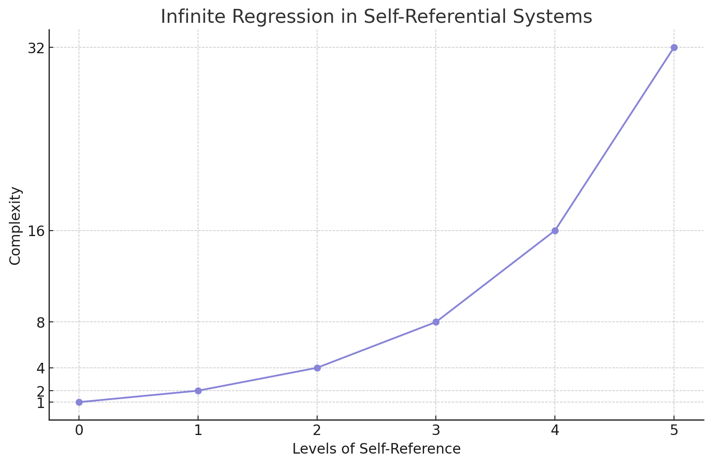
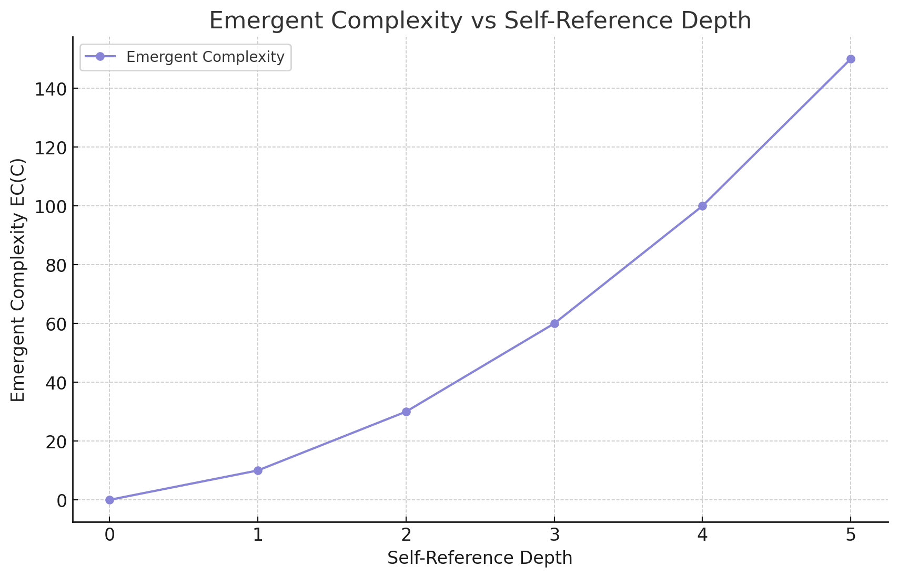

The Self-Referential Paradox of Accurate Prediction
1. Introduction
The accurate prediction of future events is a key goal in various fields such as physics, computer science, and cognitive science. However, this objective becomes especially problematic in self-referential systems - those that include a model of themselves within the system. We refer to this issue as the Self-Referential Paradox of Accurate Prediction (SPAP), which questions fundamental assumptions about the predictability, self-awareness, and comprehensibility of self-referential systems.
The significance of SPAP lies in its universal applicability. It is not merely a quirk of specific systems but a fundamental constraint arising from the logical structure of self-reference itself. This universality underscores the fundamental nature of the paradox and its far-reaching implications for our understanding of prediction, consciousness, and the nature of reality itself.
To illustrate the intuition behind SPAP, consider a hypothetical predictor attempting to forecast its own future state. To make this prediction, it must model its own predictive process, which in turn requires modeling its modeling of its predictive process, ad infinitum. This infinite regress demonstrates the inherent impossibility of accurate prediction.
Universe 00110000
2. Mathematical Foundations
A. Measure-Theoretic Framework
We begin by establishing a rigorous measure-theoretic framework to provide a unified treatment of both deterministic and non-deterministic systems.
Definition 2.1 (System State Space):
Let (S, Σ, μ) be a measure space representing the universe of possible system states, where:
- S is the set of all possible states
- Σ is a σ-algebra on S
- μ is a probability measure on (S, Σ)
B. Transition Functions
Definition 2.2 (Generalized Transition Function): Define T : S × ℝ⁺ → P(S), where P(S) is the power set of S. For any current state s ∈ S and future time interval Δt > 0, T(s, Δt) yields the set of possible future states.
Definition 2.3 (Transition Probability): Let P_T(A | s, Δt) be the probability of transitioning to a state in set A ∈ Σ, given the current state s and time interval Δt. This defines a probability kernel from (S × ℝ⁺, Σ × B(ℝ⁺)) to (S, Σ), where B(ℝ⁺) is the Borel σ-algebra on ℝ⁺.
C. Prediction Functions
Definition 2.4 (Prediction Function): Let P : S × ℝ⁺ → S be a prediction function, where for any current state s ∈ S and future time interval Δt > 0, P(s, Δt) yields a predicted future state.
Definition 2.5 (Loss Function): Let L : S × S → ℝ⁺ be a loss function quantifying the error between predicted and actual states.
Definition 2.6 (Expected Loss): The expected loss of a prediction function P for a given current state s and time interval Δt is:
E[L(P(s, Δt), s') | s, Δt] = ∫_S L(P(s, Δt), s') dP_T(s' | s, Δt)
Definition 2.7 (Complexity Measure): Let C : (S × ℝ⁺ → S) → ℝ⁺ be a complexity measure for prediction functions. This could be defined in terms of computational complexity, description length, or other relevant metrics.
Definition 2.8 (Accurate Prediction Function): An Accurate prediction function P* minimizes the expected loss while balancing complexity:
P* = arg min_P [E[L(P(s, Δt), s') | s, Δt] + λC(P)]
where λ > 0 is a parameter balancing accuracy and complexity.
This graph illustrates the trade-off between complexity and accuracy in prediction functions. As complexity increases, accuracy improves but with diminishing returns. The curve demonstrates that beyond a certain point, significant increases in complexity yield only marginal gains in accuracy.
D. Self-Referential Systems
Definition 2.9 (Self-Referential System): A system S is self-referential if its state at any time t can be represented as:
S(t) = (x(t), M(S(t)))where:
- x(t) represents all aspects of the system's state at time t other than its self-model
- M is a function that maps the system's state to a model or prediction of itself
This self-referential structure inherently leads to an infinite regress:
S(t) = (x(t), M((x(t), M((x(t), M(...))))))
This infinite nesting of the self-model M within itself is at the core of the SPAP. It demonstrates that any attempt at complete self-modeling necessarily leads to an unresolvable infinite regress.
This graph illustrates the exponential growth of complexity in self-referential systems as the depth of self-reference increases. The steep curve demonstrates how each level of self-reference compounds the system's complexity, leading to an infinite regression.
Definition 2.10 (Self-Prediction Function): For a self-referential system S, a self-prediction function P is defined as:
P : S × ℝ⁺ → S
such that for any current state s ∈ S and future time interval Δt > 0, P(s, Δt) yields a predicted future state of the system.
Definition 2.11 (Accurate Self-Prediction): An Accurate self-prediction function P* for a self-referential system S is a function that minimizes both the expected loss and the complexity of the prediction:
P* = arg min_P [E[L(P(S(t), Δt), S(t + Δt))] + λC(P)]
where:
- L is a loss function measuring the discrepancy between predicted and actual states
- C is a complexity measure for prediction functions
- λ > 0 is a parameter balancing accuracy and complexity
Definition 2.12 (SPAP): The Self-Referential Paradox of Accurate Prediction (SPAP) states that for any self-referential system S, an accurate self-prediction function P* as defined in Definition 2.11 cannot exist.
3. Formal Proof of SPAP
A. Infinite Regress and Self-Prediction Impossibility Theorem
Theorem 3.1 (Infinite Regress and Self-Prediction Impossibility): The self-referential nature of Definition 2.9 leads to an infinite regress, rendering complete self-prediction impossible due to the inherent nature of self-reference, not due to practical limitations on computational resources.
Proof:
- Let s_t be the state of a self-referential system at time t.
- By Definition 2.9, s_t = (x_t, M(s_t)), where x_t represents all aspects of the system's state other than the self-model.
- Expanding this once:
s_t = (x_t, M((x_t, M(s_t)))) - Continuing this expansion:
s_t = (x_t, M((x_t, M((x_t, M(s_t)))))) - We observe that this process continues indefinitely, as each expansion introduces a new instance of M(s_t) that requires further expansion.
- No matter how many times we expand this expression, there will always be an innermost M(s_t) that necessitates additional expansion.
- Therefore, a complete representation of s_t would require an infinite number of expansions.
- This infinite regress is not a result of computational limitations, but rather an inherent property of the self-referential structure itself.
- For a system to completely predict its own future state, it would need to fully represent its current state, including its predictive model.
- However, as shown, such a complete representation is impossible due to the infinite regress.
- Thus, complete self-prediction is rendered impossible by the very nature of self-reference, not by any practical limitations on the number of expansions we can perform.
This theorem demonstrates that the self-referential nature of the system leads to an unresolvable infinite regress, making complete self-prediction fundamentally impossible. Any attempt to fully represent the state of a self-referential system will always be incomplete, regardless of the number of expansions performed, due to the inherent structure of self-reference.
B. Complexity Growth Analysis
Theorem 3.2 (Complexity Growth): The complexity C(s) of the state s grows without bound as we attempt to refine our predictions.
Proof:
- Let C(s^(n)) be the complexity of the n-th partial state as defined in the proof of Theorem 3.1.
- Each level of recursive prediction adds a layer of complexity to the state
representation:
C(s^(n+1)) > C(s^(n)) for all n ≥ 0
- This is because s^(n+1) includes all the information in s^(n) plus an additional prediction step.
- As n → ∞, C(s^(n)) → ∞.
C. The Optimality-Complexity Tradeoff
Theorem 3.3 (Optimality-Complexity Tradeoff): There exists a fundamental tradeoff between predictive accuracy and complexity in self-referential systems.
Proof:
- Let A(P) be the accuracy of prediction function P, defined as the negative
of the expected loss:
A(P) = -E[L(P(s, Δt), s') | s, Δt]
- From Definition 2.8, we aim to maximize A(P) while minimizing C(P).
- However, from Theorem 3.2, we know that increasing accuracy requires increasing complexity.
- Therefore, there exists no global optimum that maximizes accuracy and minimizes complexity simultaneously.
- Instead, we have a Pareto frontier of optimal solutions trading off accuracy and complexity.
This graph illustrates the Pareto frontier of optimal solutions in self-referential systems. The purple curve shows accuracy A(P) increasing with complexity C(P), but with diminishing returns. Red and green lines represent increasing complexity and accuracy respectively. This demonstrates the absence of a global optimum maximizing accuracy while minimizing complexity, highlighting the fundamental tradeoff in these systems.
D. Logical Proof of the Paradox
Theorem 3.4 (Accurate Prediction Impossibility): Accurate prediction of a self-referential system is logically impossible.
Proof:
- Assume, for contradiction, that an accurate prediction function P* exists as defined in Definition 2.8.
- By Definition 2.5, the current state st must include P*(st, Δt).
- To compute P*(st, Δt) optimally, we need to know st completely.
- But st includes P*(st, Δt), creating a circular dependency.
- This circularity can only be resolved through an infinite regress, as shown in Theorem 3.1.
- An infinite regress cannot be completed, even with infinite time and resources, due to the inherent logical structure of self-reference.
- Therefore, P* cannot be computed optimally, and thus no such accurate prediction function P* can exist within a self-referential system.
E. Logical Indeterminism in Deterministic Systems
Theorem 3.5 (Logical Indeterminism): Any system capable of self-reference exhibits inherent indeterminism, regardless of the deterministic nature of its underlying dynamics.
Proof: Consider a deterministic system S with state space Ω and evolution function f : Ω × ℝ⁺ → Ω. If S is capable of self-reference, it must include a representation of its own state and evolution function. By Theorem 3.4, optimal prediction of such a system is impossible, introducing an element of indeterminism. This indeterminism arises not from randomness in the underlying dynamics, but from the logical structure of self-reference.
4. Implications for Consciousness
Before exploring the implications of SPAP for consciousness, it is crucial to establish a working definition of consciousness that aligns with our current understanding and the framework of this paper:
Definition 4.0 (Consciousness): Consciousness is a state of awareness characterized by subjective experiences and the capacity for self-reflection. Fundamentally, consciousness involves:
- A self-model: An internal representation of the self and its states.
- Self-awareness: The ability to recognize and process information about one's own existence and mental states.
- Prediction: The capacity to anticipate future states of both the self and the environment.
This definition emphasizes that consciousness, at its core, must contain a self-model to be aware of itself, and this self-model inherently involves prediction. This conceptualization of consciousness provides a foundation for understanding the profound implications of SPAP on our understanding of self-aware systems.
A. Mathematical Formalization of Self-Reference in Conscious Systems
Let C be a conscious system and S(C, t) be its state at time t. SPAP demonstrates that:
S(C, t) = (x_t, P(S(C, t), Δt))
This equation encapsulates the self-referential nature of consciousness, where x_t represents all aspects of the conscious system's state at time t other than its self-prediction, and P(S(C, t), Δt) is the system's prediction of its own future state. This formalization highlights the recursive nature of self-awareness, where a conscious system's current state includes its prediction of its future state.
B. Fundamental Limits of Self-Knowledge
Theorem 4.1 (Impossibility of Complete Self-Knowledge)
For any conscious system C, there exists no function F such that F(S(C, t)) = S(C, t + Δt) for all t.
Proof: Assume such an F exists. Then S(C, t) would include an accurate prediction of itself, leading to the infinite regress proved in Theorem 3.1. This contradicts the finite nature of physical systems. Therefore, no such F can exist.
This theorem has profound implications for our understanding of consciousness. It suggests that even a hypothetical "perfect" conscious system would be fundamentally unable to achieve complete self-knowledge. This aligns with philosophical concepts like the "blind spot" in consciousness and provides a mathematical foundation for such ideas.
C. Emergence of Complexity in Conscious Systems
Definition 4.1 (Emergent Complexity)
Let EC(C) be the emergent complexity of a conscious system C. We define EC(C) as:
EC(C) = H(S(C, t + Δt) | P(S(C, t), Δt))
where H( · | · ) is the conditional entropy, measuring the uncertainty in the actual future state given the system's prediction.
Theorem 4.2 (SPAP-Induced Complexity)
For any conscious system C, EC(C) > 0.
Proof: By Theorem 3.4, P(S(C, t), Δt) cannot perfectly predict S(C, t + Δt). Therefore, there must be some non-zero uncertainty in S(C, t + Δt) given P(S(C, t), Δt), implying EC(C) > 0.
This graph shows how emergent complexity increases with self-reference depth in conscious systems. The curve illustrates a non-linear growth in complexity as self-reference deepens. While simplified, it captures the paper's key principle: emergent complexity in self-referential systems accelerates with increased self-modeling sophistication.
This theorem suggests that all conscious systems, by virtue of their self-referential nature, must exhibit some level of emergent complexity. This could help explain why consciousness often appears to have properties that are not easily reducible to simpler components.
D. Implications for Understanding Consciousness
The principles established by SPAP have several important implications for our understanding of consciousness:
- Even highly sophisticated conscious systems have inherent limitations in their ability to predict their own future states.
- The self-referential nature of consciousness necessarily leads to some degree of emergent complexity.
- There exists a fundamental trade-off between the sophistication of a system's self-model and its predictive accuracy.
- Complete self-knowledge is theoretically impossible for any conscious system, regardless of its complexity or sophistication.
These implications provide a rigorous mathematical foundation for many intuitive and philosophical ideas about the nature of consciousness, while also opening new avenues for research in cognitive science, neuroscience, and artificial intelligence.
5. Implications for Our Understanding of Reality
A. Inherent Indeterminism in Seemingly Deterministic Systems
SPAP reveals an inherent "logical indeterminism" that exists even in systems seemingly governed by deterministic laws. This indeterminism arises not from missing information or quantum effects, but from the system's capacity for self-reference.
B. Limits of Knowledge and Scientific Realism
SPAP challenges naive scientific realism by highlighting the limitations of self-prediction. Even a "theory of everything" would be inherently incomplete.
C. SPAP and the Problem of Induction
SPAP offers a unique perspective on the Problem of Induction by viewing scientific laws as the universe's "self-prediction" of its behavior. The universe, through its self-aware subsystems (like humans), is effectively trying to "predict" itself. SPAP demonstrates that accurate self-prediction in such systems is impossible.
This doesn't invalidate the scientific pursuit of understanding the universe's regularities. Instead, it provides a fundamental reason for the provisional and iterative nature of scientific progress. SPAP suggests that this constant refinement and revision isn't just a practical limitation but a consequence of the universe's self-referential nature.
6. Implications for Artificial Intelligence
A. Limits on Predictability and Self-Modeling in AI Systems
Theorem 6.1 (AI Self-Modeling Limit): Any AI system capable of self-reference and prediction is subject to the limitations described by SPAP.
B. Implications for Artificial General Intelligence (AGI)
The concept of rapid intelligence growth through recursive self-improvement may need to be reevaluated in light of SPAP. Key implications include:
This graph depicts the relationship between AI capability growth and prediction uncertainty over time. As AI systems become more advanced, their ability to improve themselves grows, but so does the uncertainty in predicting their future states.
- Bounded Self-Improvement: AGI systems will face inherent limitations in their ability to predict and optimize their own future states.
- Uncertainty in Long-term Planning: AGI systems will need to contend with increasing uncertainty in long-term predictions about their own behavior and capabilities.
- Necessity of Approximation: Successful AGI systems will likely rely on approximation strategies and heuristics rather than pursuing optimal self-models.
C. AGI Optimality-Complexity Trade-off Principle
Theorem 6.2 (AGI Optimality-Complexity Trade-off Principle): For any artificial general intelligence system A, there exists a fundamental trade-off between its level of self-knowledge, its ability to make accurate predictions about its own future states, and the computational complexity of its self-model.
D. AI Safety and Ethics
SPAP has profound implications for AI safety and ethics, particularly in the context of advanced AI systems:
- Fundamental Uncertainty: Even highly advanced AI systems will face inherent limitations in predicting their own future states, challenging the notion of perfectly controllable AI.
- Limits of Value Alignment: Perfect value alignment between AI systems and human values may be fundamentally impossible.
- Ethical Reasoning Under Uncertainty: AI systems will need to develop robust methods for ethical reasoning under uncertainty.
These implications underscore the need for a probabilistic approach to AI safety, where the focus shifts from achieving perfect control or alignment to managing and mitigating risks in inherently uncertain systems.
7. SPAP as a Universal Constraint
A. Application to All Forms of Consciousness and Intelligence
The Self-Referential Paradox of Accurate Prediction (SPAP), grounded in mathematical logic, establishes a universal limit on the self-knowledge and prediction capabilities of any self-aware system.
Theorem 7.1 (Universality of SPAP)
Any self-aware system is subject to the limitations imposed by the SPAP.
Proof:
Let S be any self-aware system. By definition, S must be capable of self-reference and prediction. Let PS be the prediction function of S. Now, consider the state of S at time t, denoted as St. For S to predict its own state at time t+Δt, we must have:
PS(St , Δt) = St+Δt
However, St must include PS itself, as it is part of the system's state. This leads to:
St = (xt, PS)
where xt represents all other aspects of the system's state. Substituting this into the prediction equation:
PS((xt, PS), Δt) = St+Δt
This is precisely the self-referential structure that leads to the infinite regress proved in Theorem 3.1. Therefore, S is subject to the limitations of SPAP, regardless of its specific nature or origin.
This theorem has profound implications for our understanding of consciousness and intelligence, whether biological, artificial, or potentially extraterrestrial.
B. Universal Cognitive Architecture
The universality of SPAP suggests a fundamental framework within which all self-aware systems must operate. This leads us to propose the concept of a universal cognitive architecture.
Definition 7.1 (Universal Cognitive Architecture)
A universal cognitive architecture is a fundamental framework of information processing that incorporates the limitations imposed by SPAP and is applicable to all forms of self-aware intelligence.
Theorem 7.2 (Existence of Universal Cognitive Architecture)
There exists a universal cognitive architecture that underlies all forms of consciousness and intelligence, characterized by the following properties:
- Inherent uncertainty: This follows directly from Theorem 3.4, which proves the impossibility of accurate self-prediction.
- Limits on accurate self-prediction: This is a restatement of the core result of SPAP, proven in Theorem 3.4.
- Dynamic, evolving self-models: As per the definition of self-referential systems (Definition 2.9), the state of the system includes its own model. As the system evolves over time, this self-model must also evolve, leading to dynamic self-models.
- Emergence of complexity: This follows from Theorem 4.2, which demonstrates that SPAP induces non-zero emergent complexity in conscious systems.
- Optimality-complexity trade-offs: This is a direct consequence of Theorem 3.3, which establishes the fundamental trade-off between predictive accuracy and complexity.
The existence of a universal cognitive architecture has significant implications for comparative studies of intelligence across different substrates and origins.
Universe 00110000
9. Novelty of SPAP
While SPAP shares similarities with other concepts, it introduces several novel aspects:
- Incorporation of Temporal Dynamics: SPAP explicitly considers the evolution of self-referential systems over time, focusing on how prediction limitations change as the system itself changes.
- Unified Treatment of Deterministic and Non-Deterministic Systems: SPAP's core argument stems from the limitations imposed by self-reference itself, regardless of whether the underlying system operates under deterministic or non-deterministic rules.
- Connection to Emergent Complexity: SPAP offers a potential mechanism for understanding the emergence of complex, seemingly unpredictable behavior from simpler underlying rules.
- Quantitative Framework for Self-Referential Prediction: SPAP provides a quantitative lens for analyzing self-referential prediction, moving beyond qualitative observations.
- Universal Applicability: SPAP stands out due to its universal applicability across various forms of intelligence and self-awareness, laying the groundwork for a "universal cognitive architecture."
10. Conclusion
The Self-Referential Paradox of Accurate Prediction (SPAP) illustrates the inherent impossibility of accurate prediction in systems capable of self-reference. This paradox imposes fundamental limits on self-knowledge and predictability, challenging deterministic assumptions even in seemingly complete systems. SPAP applies universally across various forms of consciousness and intelligence, revealing a critical trade-off between predictive accuracy and computational complexity.
SPAP offers a unifying principle that bridges diverse disciplines, providing new insights into the nature of consciousness, intelligence, and the limits of scientific knowledge. This paradox not only highlights the limitations of our understanding but also points to the rich potential for innovation and deeper comprehension in various fields. As we continue to explore SPAP's implications, we may uncover new connections and gain unprecedented insights into the nature of reality itself.